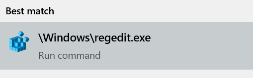
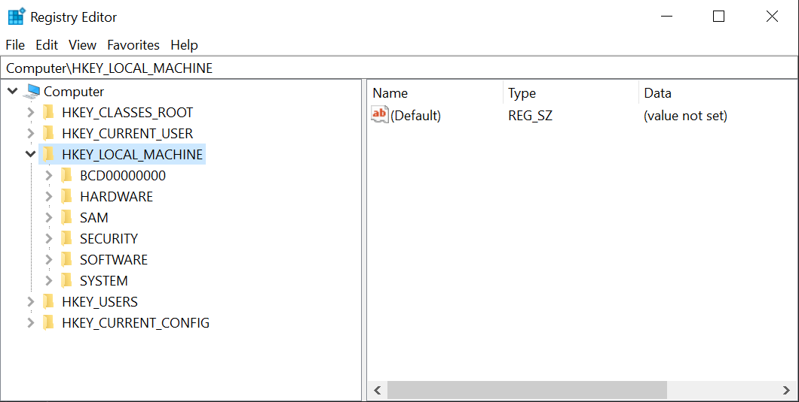

As part of the Consumer Out-of-box Experience, Microsoft signs deals with companies to automatically download sponsored apps and content to users' computers without their permission. Even if the user tries to uninstall them, they will either automatically re-download at a later date by themselves or will come with the next Windows update. It is a questionable practice at best.
Fortunately, it is not particularly difficult to prevent these downloads using a built-in tool called Regedit (short for Registry Editor). To use it, simply paste
\Windows\regedit.exe into the taskbar search field, or into a File Explorer window's address bar. 
In Regedit, the folders are known as keys. At the top of the window is an address bar. We will use the address bar to quickly navigate to keys in the registry. The left sidebar is a tree-view for manually navigating the registry hierarchy, and in the right panel we can create, edit, or delete keys or values.

Make the following changes to the registry. If a key or value does not exist, create it by right-clicking the parent key in the left sidebar and choosing
New > Key or
right-clicking in the right sidebar and choosing New > DWORD (32-bit) Value, respectively.
-
Recommended
-
Computer\HKEY_CURRENT_USER\Software\Microsoft\Windows\CurrentVersion\ContentDeliveryManagerSilentInstalledAppsEnabled= 0PreInstalledAppsEnabled= 0OemPreInstalledAppsEnabled= 0SystemPaneSuggestionsEnabled= 0ContentDeliveryAllowed= 0
-
Computer\HKEY_LOCAL_MACHINE\SOFTWARE\Policies\Microsoft\Windows- Create Key
CloudContent, then Create DWORD (32-bit) ValueDisableWindowsConsumerFeaturesand set equal to 1
- Create Key
-
-
Additional (Change only if Recommended does not fix the issue)
-
Computer\HKEY_LOCAL_MACHINE\SOFTWARE\Policies\Microsoft - Create Key
WindowsStore, then Create DWORD (32-bit) ValueAutoDownloadand set equal to 2
-
-
Computer\HKEY_LOCAL_MACHINE\SOFTWARE\Microsoft\Windows\CurrentVersion\WindowsStore\WindowsUpdateAutoDownload= 2
Note: O&O's ShutUp10 can make these tweaks automatically and more, but it is closed source. I advise against using 3rd-party registry-tweaking software unless it is open source so that its validity can be verified.